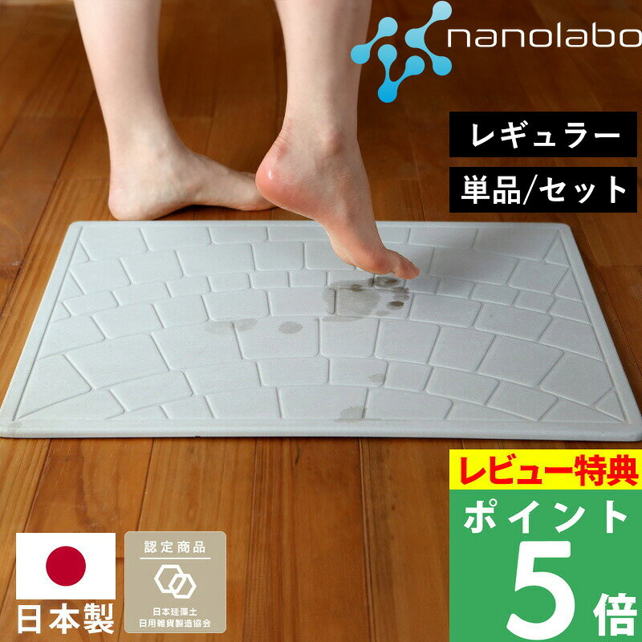

生活雑貨
珪藻土バスマットおすすめ3選と選び方|価格・評価で比較
2026-11-13

※本記事には商品プロモーション(アフィリエイト広告)を含みます【PR】
珪藻土バスマットを選ぶときは、価格、レビューの評価と件数、薄さや吸水性といった素材の工夫を見比べると選びやすくなります。ここでは3点を同じ観点で比較します。
デザインの種類が選べて贈り物にも人気のタイプ
価格は7,480円で、レビューは平均4.59・件数29,448件と非常に多く、口コミの信頼度を重視する人には参考にしやすい一枚です。全11種類という豊富なデザインから選べる点が特徴で、誕生日や引っ越し祝いなどの贈り物として選ばれることが多いとされています。累計販売枚数は189,000枚を超えており、全国送料無料で届けられる点も比較の際にチェックしておきたいポイントです。全11種類 日本製 珪藻土バスマット 珪藻土マットは、デザインの選択肢の広さとレビュー件数の多さで他の2点と比べられます。

ブランドならではの作りが魅力なタイプ
価格は11,000円で3点の中では最も高めですが、レビューは平均4.64と3点中もっとも高い評価になっています。件数は5,134件で、デザイン展開が豊富なタイプの約29,000件と比べると少なめですが、評価の高さという点では際立っています。珪藻土バスマット バスマット 珪藻土 soilは、同じブランドから複数のサイズやデザインの珪藻土バスマットが展開されていることが商品データからもうかがえ、価格と評価のバランスを比べる際の軸になる一枚です。

薄さと吸水速乾性に工夫があるタイプ
価格は7,480円で、レビューは平均4.57・件数3,095件です。商品説明によると、一般的な珪藻土バスマットより薄くて軽い作りになっており、吸水性・速乾性に重点を置いているとされています。珪藻土にパルプ繊維(紙)を組み合わせることで強度を高めている点も特徴です。自然に水分を放出しやすく、ゴミがたまりにくいため洗濯の頻度を抑えやすく、カビやダニの発生を抑えやすいとされています。日本製『 なのらぼ 足快バスマットは、薄さと速乾性を比較の軸にしたい人に注目したい一枚です。

レビュー件数の多さやデザインの豊富さを重視するなら全11種類タイプ、評価の高さを重視するならソイルブランドタイプ、薄さと速乾性を重視するなら足快タイプが選びやすいでしょう。


読み込み中...